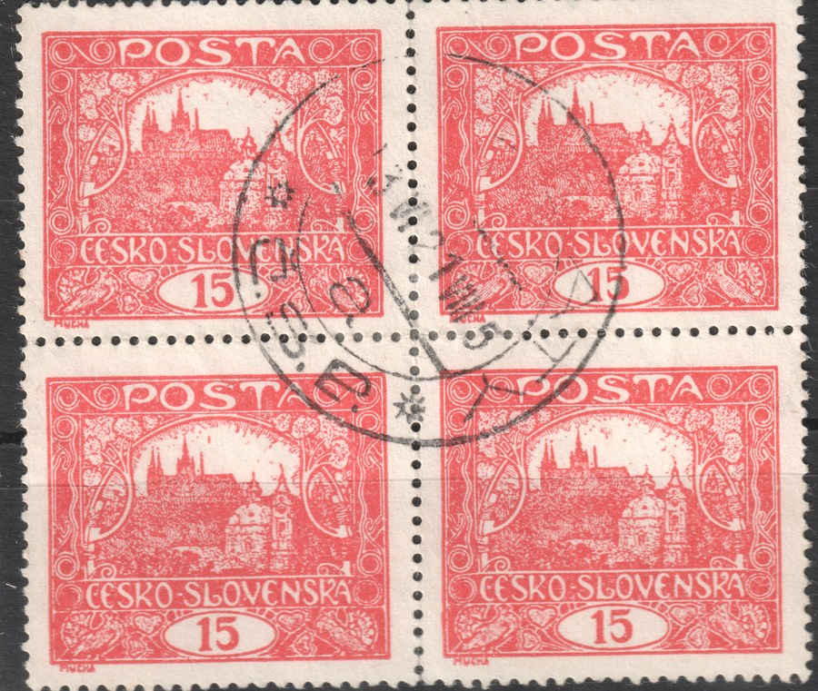
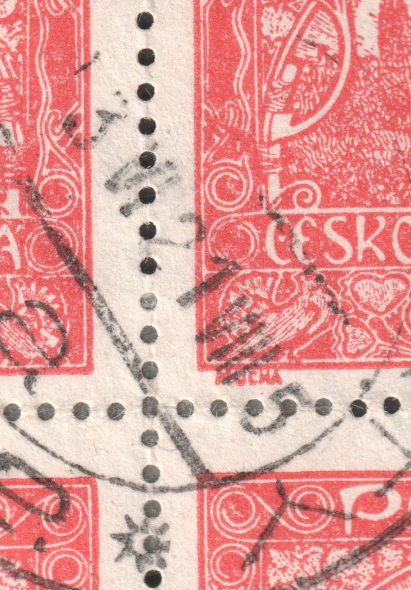

Oblitérations datées après la fin de validité des Hradčany
La validité postale de l’émission Hradčany a pris fin le 30 avril 1921. Pourtant, parmi les timbres oblitérés, on rencontre de temps à autre une pièce dont la date d’oblitération dépasse cette limite. Cette page rassemble ces trouvailles et sera complétée au fil des nouvelles pièces.
Bloc de quatre 15 h de la 6e planche, dentelure C — « VI. 21 »
La première pièce documentée : un bloc de quatre 15 h de la 6e planche (cases 48, 49, 58 et 59), dentelure linéaire C. L’oblitération à étoile avec la mention Č.S.P. — le nom du bureau est illisible — porte la date VI. 21, soit juin 1921, plus d’un mois après la fin de validité.


Comment lire une telle pièce ? L’explication la plus probable est une molette de date mal réglée — l’employé a décalé le millésime. De telles erreurs sont connues sur d’autres émissions aussi et, sur un timbre détaché sans son pli, on ne peut ni les exclure ni les confirmer. Les autres possibilités sont une oblitération tardive d’un envoi affranchi encore pendant la validité, et la simple tolérance de la poste, qui acceptait encore l’ancien timbre. En règle générale, seul un pli permet de trancher — d’après son contenu, le tarif acquitté et le cachet d’arrivée.
Dans les relevés, ce bloc est traité comme une erreur de réglage du cachet, c’est-à-dire classé sous l’année 1920 (juin) ; la période couverte par le relevé des oblitérations datées s’arrête de toute façon en avril 1921. Les autres pièces datées après le 30 avril 1921 seront ajoutées ici au fur et à mesure.